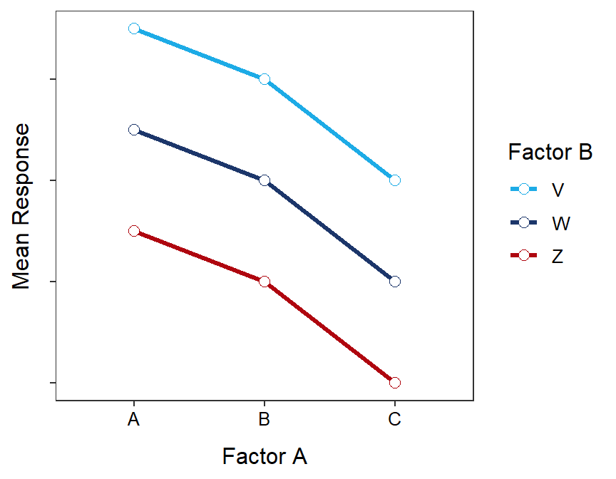
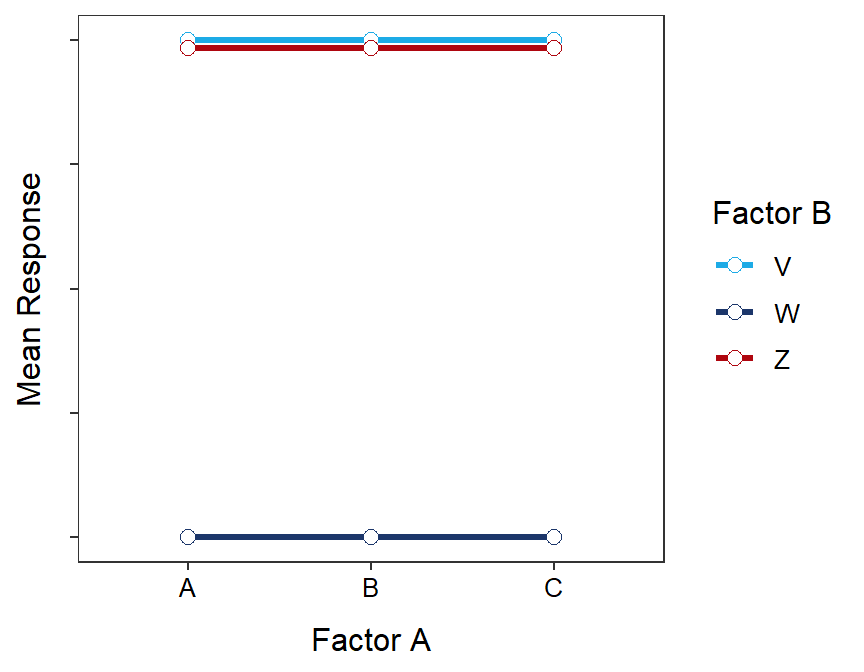
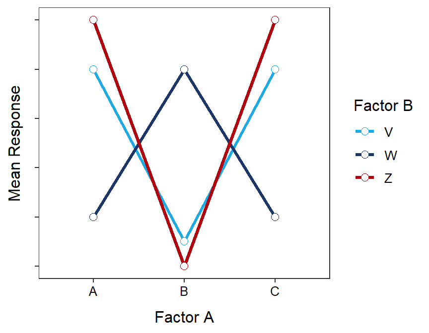
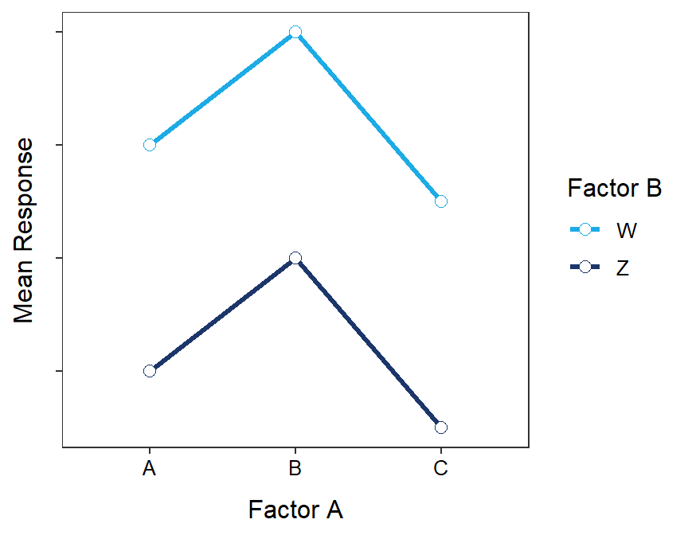
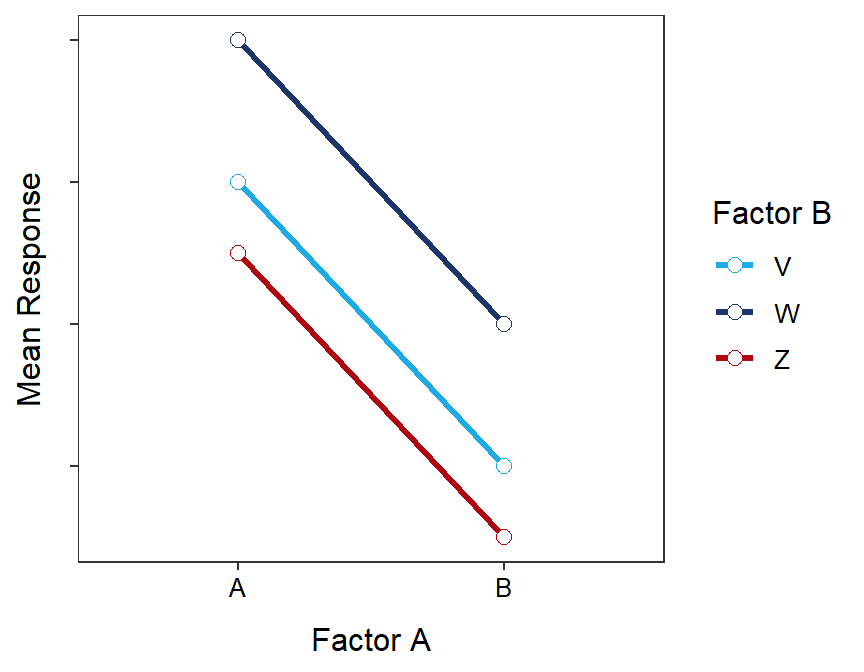
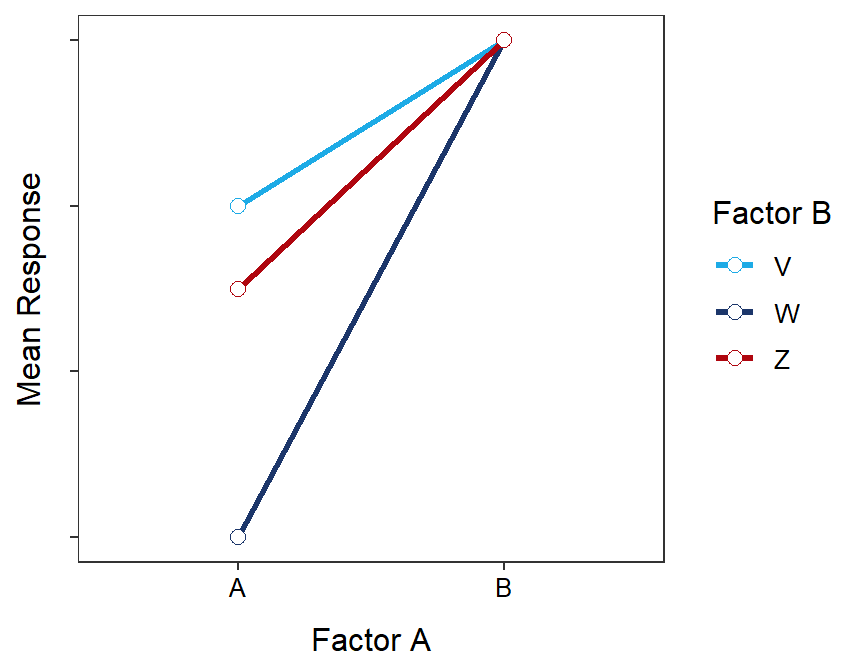

Note Your answers to the questions below should follow the expectations for homework found here. Due date is on the Dates page.
A chemical engineer is designing the production process for a new product. The chemical reaction that produces the product may have higher or lower yield, depending on the temperature and stirring rate in the vessel in which the reaction takes place. The engineer decides to investigate the effect on yield of three temperatures (50oC, 55oC, and 60oC) and three stirring rates (60, 90, and 120 rpm). A new vessel should be used for each production and only 36 vessels exist. Help the engineer set up this experiment by answering the questions below.
The table below represents the group or treatment means created from two factors. Use this information to answer the questions below.
| A | B | C | D | |
|---|---|---|---|---|
| W | 50 | 50 | 35 | 40 |
| Z | 40 | 45 | 30 | 45 |
For each interaction plot below determine which effects (interaction, factor A main, or factor B main) are illustrated. Provide a short explanation for each of your answers (i.e., how did you come to your conclusions).






Below are three means tables that each corresponds to one of the figures in the previous questions. For each table, identify which figure above that it corresponds to.
| V | W | Z | |
|---|---|---|---|
| A | 2.5 | 3 | 2.25 |
| B | 1.5 | 2 | 1.25 |
| V | W | Z | |
|---|---|---|---|
| A | 3.5 | 1.5 | 3.47 |
| B | 3.5 | 1.5 | 3.47 |
| C | 3.5 | 1.5 | 3.47 |
| V | W | Z | |
|---|---|---|---|
| A | 2.5 | 1.5 | 2.25 |
| B | 3.0 | 3.0 | 3.00 |
Note that sample(n) where n is replaced with a number will randomly “jumble” n numbers.↩︎